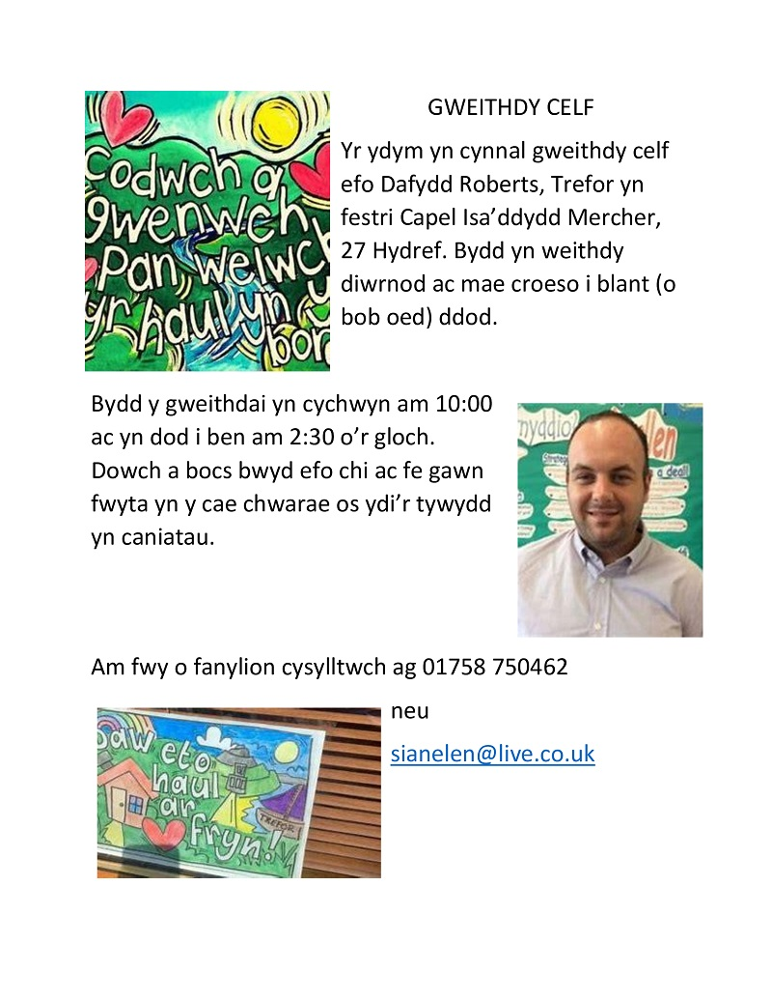
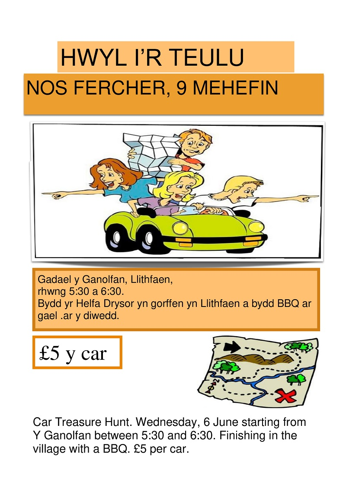
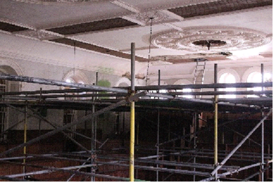
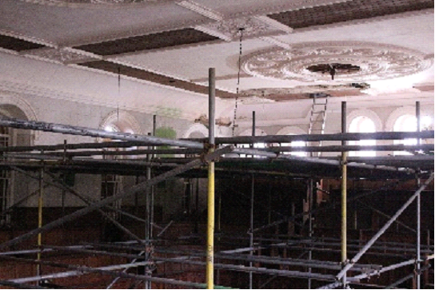

Background

Over the summer various workshops were held for children in the village and surrounding area followingthe success of the previous art workshops.

On Wednesday, 27th July there was a trip to Tre'r Ceiri with the archaeologist and historian Rhys Mwyn. A fascinating day ensued as he explained the life of the inhabitants in that period and how the various buildings were used. The children collected images and drawings to use in the workshops that were to follow the visit.
The second workshop was held for two days with Catrin Williams looking at images and patterns collected from Tre' r Ceiri to create pictures and patterns for use on clothing.
There was a lot of fun in the next workshop when the children went out to collect blackberries, boiling them on a proper fire to get the colour of the fruit to create a liquid as dye. The same was made with onion skins. The clothes (T-shirts) had to then be soaked in the liquid for some time so that the garment changed its colour by colours from nature.
Catrin Williams came back for the next workshop to decorate the T-shirts with the patterns made in the previous workshop. The children received the decorated shirts as a reward for their work.
The last workshop was with Dafydd Roberts from Trefor – this was a workshop to design stained glass windows on the theme from Dre'r Ceiri.
Special thanks to Lois Fychan for hosting sports sessions weekly on the playground throughout the summer holidays.
Art Workshop: 27 October 2021 10:00am - 2:30pm
A trip through the Llithfaen of Yesteryear: 29 July 2021 5:30pm

Treasure Hunt: 9 June 2021 5:30pm-6:30pm
Hafod Ceiri: Open the Door: 5 June 2021 2:00pm-5:00pm.
 hrist
hrist
The roof is nearing completion and TIR workers have been working diligently during the cold period to get the job done. Thanks also to CADW for extra money to carry out work on the internal plaster and the front door. This work will also finish soon. We will then clean the building before moving on to the next stage.
Below is a video of the Hafod Ceiri Christmas concert, held on-line this year to maintain social distancing. Please enjoy, and accept our best wishes for a peaceful and merry Christmas (and happy New Year).
Work is ongoing on the chapel. All we need now is better weather !!
We have received more money from CADW to refurbish the interior ceiling and get the plasterwork back to its original state.
Geraint Jones gave a talk on "The Smallest Man in the World" in October, and Bob Morris gave a talk on "The Legends of Arthur" in November. In the new year we will be having talks on the third Wednesday of the month.
At long last the works on Capel MC Llithfaen is underway! We signed the lease on the building in February of this year, but this difficult period descended upon us, and despite securing the monies, the work came to an abrupt halt, almost before it began.

By now, however, the work is underway again, and these initial grants are being used to pay for the work of securing the roof and strengthening the ceiling. We thank “AONB Llŷn’s Sustainable Development Fund”, The Garfield Weston Foundation, The Welsh Church Fund, CADW and The Lottery Heritage Fund for their support during this stage.
 

Our eventual aims for the building is to create two floors within the main building, the open upper floor, keeping the gallery and choir stalls’ unique features; the lower floor will be developed into a small café and a heritage centre, focusing on local history and Tre’r Ceiri.
Of course, due to the present restrictions, we were unable to make a start the heritage activities we had planned, but we had various Zoom during the lockdown months. It is our intention to resume the monthly meetings once the situation allows us to hold face to face meetings inside.
We held our annual pilgrimage on Sunday, 30 August. We walked from the church in Pistyll to the church in Nefyn, and we thank Ann Roberts for making the arrangements and for the warm welcome at the maritime museum.

It is a challenging period for every organisation, and because we can’t host activities, and the bills keep rolling in, we have set up a Just Giving page. If you’d like to make a contribution towards our venture, we would be extremely grateful.
We are in the process of designing a website and, by now, we have social media pages:- give the Hafod Ceiri page a like on Facebook and follow @HafodCeiri on Twitter.
Os hoffech fod ar restr ein cyfeillion - a fyddai'n bosib i chi anfon eich manylion cysylltu cywir i Cyfeillion.HC@hotmail.com
{kind=link}
{kind=link}
{kind=link}
{kind=link}
{kind=link}